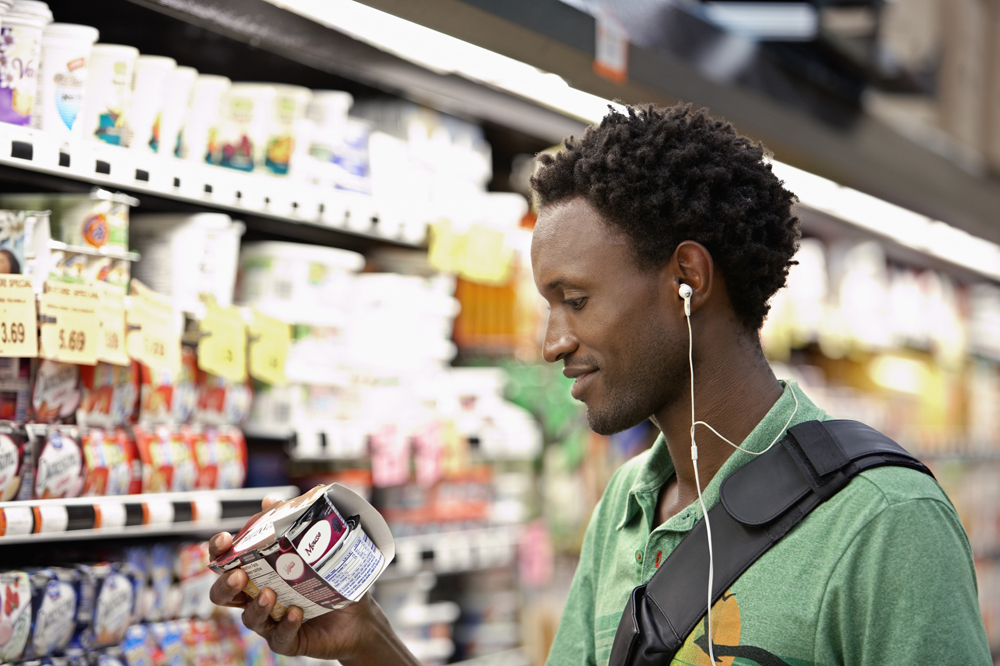
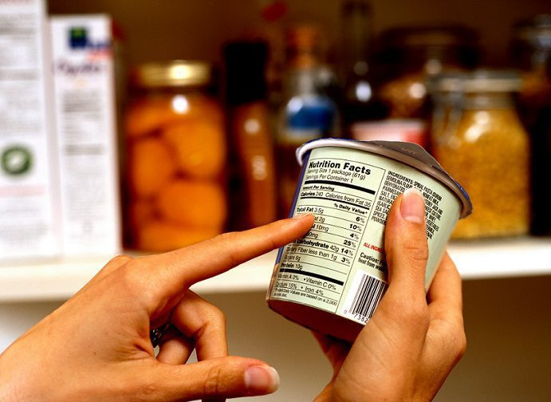

1. Check the ingredients
Look at what appears in the ingredient list and consider how many different ingredients are used.
Practical everyday habits
Use simple label-reading habits and food comparisons to make informed choices without needing a perfect diet.

A few simple habits can make labels easier to understand.
Three useful habits
Packaging can highlight specific features, but the ingredient list and nutrition information can provide additional context.
Look at what appears in the ingredient list and consider how many different ingredients are used.
Comparing two similar products can make differences in ingredients and formulation easier to notice.
Consider how often a food appears in your routine rather than judging your entire diet from one food.
Interactive comparison
Select two foods to compare their category, processing level, ingredients, and everyday tips.
Personal checklist
Use this checklist as a reminder when looking at packaged foods. Your selections are saved in this browser.
Food choices happen in real life. Learning to read labels can help you make decisions that fit your needs, preferences, budget, and routine.

Questions or feedback?
Share a question or comment about the information presented on this website.